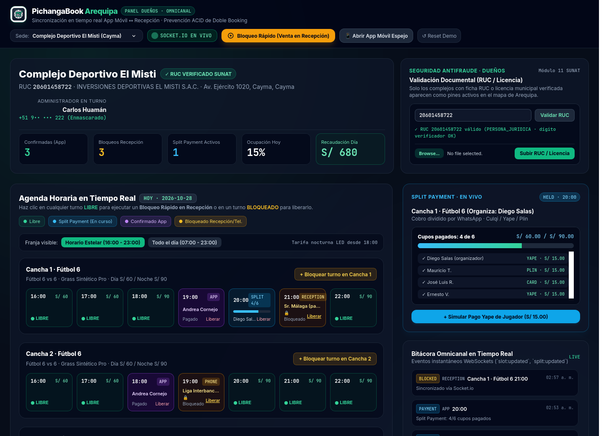
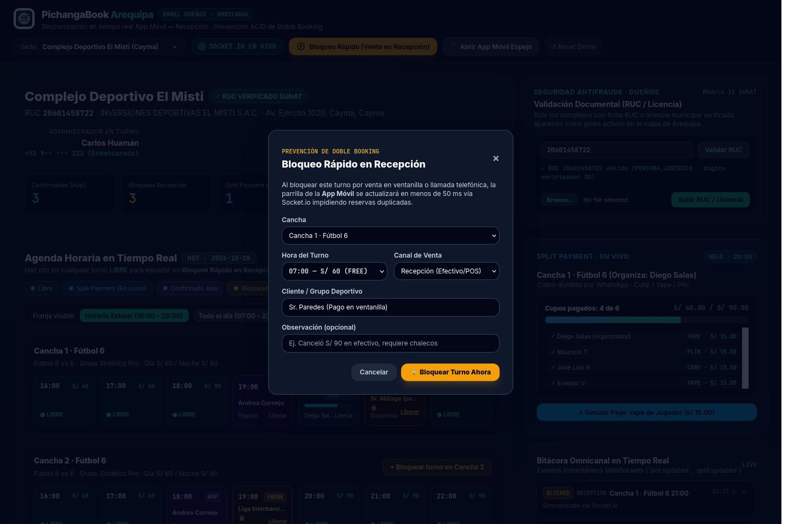
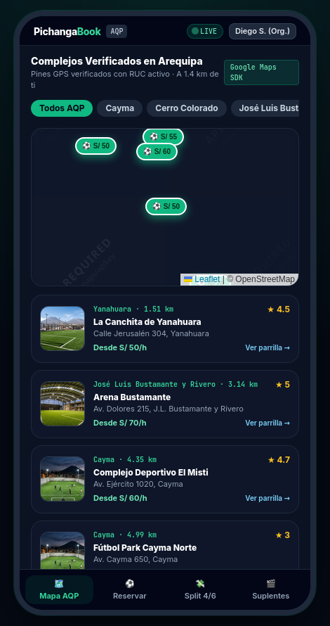
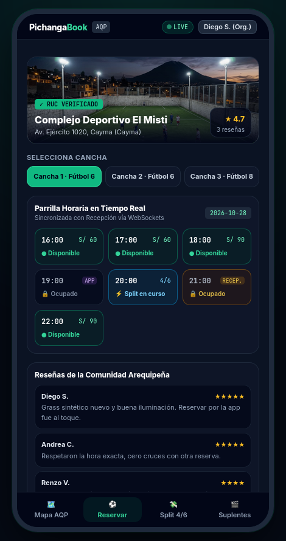
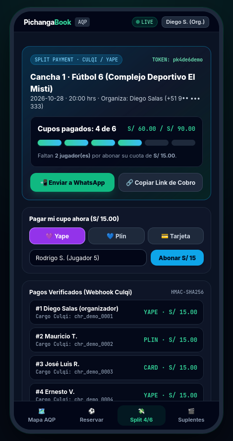
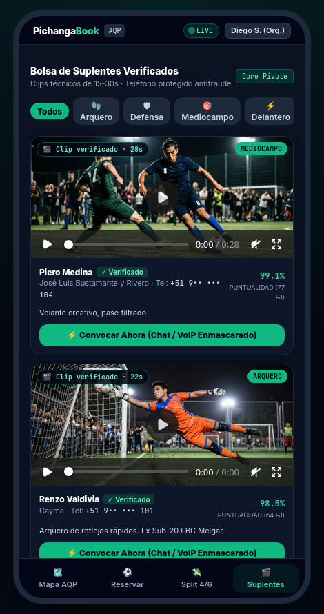
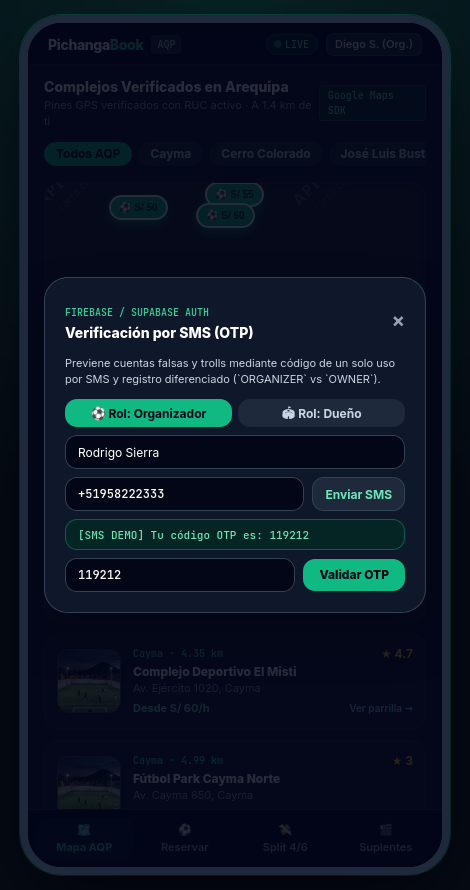
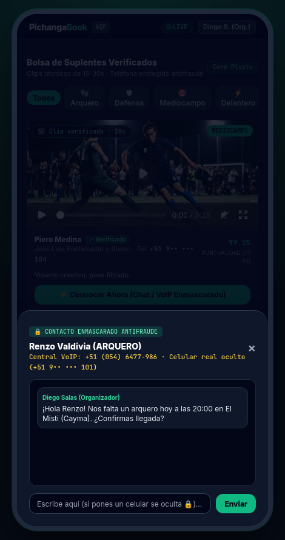

En este informe presentamos el avance del Producto Mínimo Viable (MVP) de PichangaBook Arequipa, una plataforma pensada para organizar partidos de fútbol en canchas sintéticas de Arequipa evitando reservas duplicadas, facilitando el pago dividido entre amigos y permitiendo convocar suplentes cuando falta un jugador a última hora. Para esta entrega nos enfocamos en dos partes principales del sistema: el modelo relacional de la base de datos en PostgreSQL y la implementación de las interfaces gráficas (el panel web para los dueños de complejos deportivos y las pantallas de la aplicación móvil para jugadores y organizadores).
Para almacenar la información del sistema utilizamos PostgreSQL. Diseñamos el esquema en el archivo schema.sql buscando cubrir los datos de los usuarios, los complejos deportivos por distrito en Arequipa, la disponibilidad horaria de las canchas, los pagos divididos y los perfiles de los suplentes.
| Tabla | Descripción y campos principales |
|---|---|
users |
Registra a los usuarios indicando su rol (ORGANIZER o OWNER), nombre completo, teléfono en formato E.164, una columna generada phone_masked que oculta los dígitos centrales del celular y el estado de verificación por SMS (otp_verified). |
complexes |
Guarda los datos de cada complejo deportivo: propietario (owner_id), nombre comercial, número de RUC de 11 dígitos, distrito en Arequipa (Cayma, Yanahuara, Cerro Colorado, etc.), dirección, coordenadas GPS (latitude, longitude) y estado de validación documental (verification_status). |
courts |
Contiene las canchas pertenecientes a cada complejo (complex_id), nombre de la cancha, formato de juego (Fútbol 6, Fútbol 7 o Fútbol 8), tipo de césped sintético y precio por hora diurno (base_price_day) y nocturno (base_price_night). |
bookings |
Almacena las reservas y bloqueos de horarios por cancha (court_id), fecha y hora de inicio y fin (start_time, end_time), modalidad de pago (FULL, SPLIT o CASH_RECEPTION), estado del turno (HELD, CONFIRMED, BLOCKED_RECEPTION) y una restricción EXCLUDE USING gist que impide registrar dos reservas en el mismo horario. |
split_payments |
Controla el pago dividido asociado a una reserva (booking_id), el código para compartir por WhatsApp (split_code), el monto por jugador (amount_per_slot), el total de cupos (total_slots) y la cantidad de cupos ya pagados (paid_slots). |
payment_shares |
Detalla cada pago individual realizado dentro de un pago dividido (split_payment_id), guardando el nombre del jugador, el método elegido (YAPE, PLIN o CARD) y el estado del abono. |
substitute_profiles |
Guarda la información de la bolsa de suplentes: posición en cancha (ARQUERO, DEFENSA, MEDIOCAMPO, DELANTERO), puntaje de puntualidad (punctuality_score), partidos jugados y la URL del video corto (video_clip_url) con una restricción CHECK de entre 15 y 30 segundos. |
schema.sql).|
 Figura 1: Panel web de administración para dueños de complejos.
|
El panel web para los administradores de canchas se desarrolló con HTML5, CSS3 y Tailwind CSS dentro de la carpeta En la parte superior muestra los datos del complejo deportivo seleccionado, el estado de verificación del RUC y el resumen de reservas del día. En la parte inferior se encuentra la parrilla horaria de cada cancha diferenciando con colores los turnos libres, los pagados por la aplicación, los que están en pago dividido y los bloqueados en recepción.
Para construir esta vista se utilizan los datos almacenados en las tablas |
|
Dentro del mismo panel web implementamos una ventana modal en HTML y Tailwind CSS para que el recepcionista pueda registrar rápidamente una venta presencial en ventanilla o una reserva hecha por llamada telefónica.
El formulario permite seleccionar la cancha, el horario disponible, el canal de venta (efectivo/POS o teléfono) y el nombre del cliente. Al guardar el bloqueo, el turno pasa al estado |
 Figura 2: Ventana modal de bloqueo rápido en recepción.
|
|
 Figura 3: Pantalla móvil del mapa de complejos en Arequipa.
|
La aplicación móvil para jugadores y organizadores se estructuró en Flutter (Dart) dentro de
La primera pantalla (
Debajo del mapa se listan las tarjetas de cada local mostrando su foto, dirección, calificación y distancia, leyendo los registros verificados de la tabla |
|
Al entrar a un complejo deportivo se abre la pantalla de detalle (
En el centro diseñamos la parrilla horaria donde el jugador ve qué horas están disponibles y cuáles ya están ocupadas o en proceso de pago dividido. En la parte inferior se muestran las reseñas dejadas por otros jugadores. Esta vista se alimenta directamente de las tablas |
 Figura 4: Vista móvil de horarios por cancha y reseñas.
|
|
 Figura 5: Vista de progreso de pago dividido entre jugadores.
|
La pestaña de pagos divididos ( La interfaz muestra el progreso de los pagos con una barra visual y un contador claro (“Cupos pagados: 4 de 6” junto al monto recaudado S/ 60.00 de S/ 90.00), además de los botones para compartir el enlace de cobro por WhatsApp.
Más abajo incluye los botones de método de pago (Yape, Plin o tarjeta) para abonar la cuota individual de S/ 15.00 y la lista de compañeros que ya pagaron. Toda esta información corresponde a las tablas |
|
La vista de la bolsa de suplentes (
En la parte superior colocamos filtros por posición (
Los datos mostrados en estas tarjetas se obtienen de la unión entre las tablas |
 Figura 6: Bolsa de suplentes con filtros por posición y video.
|
|
 Figura 7: Ventana de registro por roles y validación por código SMS.
|
Para la parte de seguridad en el frontend móvil implementamos dos ventanas modales:
La primera (Figura 7) corresponde al formulario de registro y verificación por SMS (OTP), donde el usuario selecciona si ingresa como
La segunda ventana (Figura 8) se abre al convocar a un suplente. Muestra un chat interno donde el número real del jugador nunca aparece completo, mostrándose únicamente la columna generada |
4Conclusiones del avance
En este avance completamos la estructura de la base de datos en PostgreSQL ( Asimismo, terminamos el diseño e implementación de todas las pantallas comprometidas en el frontend: tanto el panel web administrativo en HTML y Tailwind CSS para los dueños de canchas como las vistas móviles en Flutter y su prototipo ejecutable para los jugadores y organizadores. |
 Figura 8: Chat interno con número telefónico enmascarado.
|